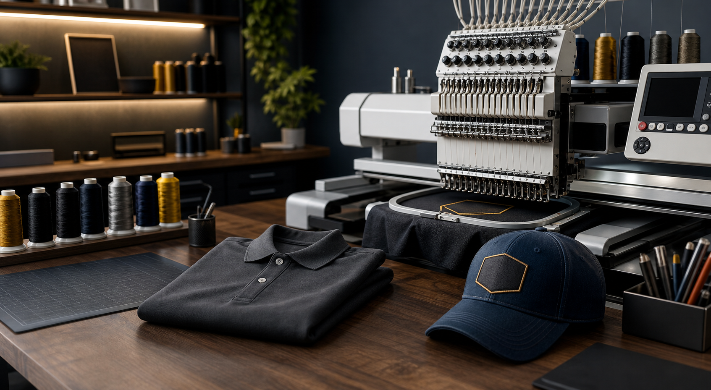
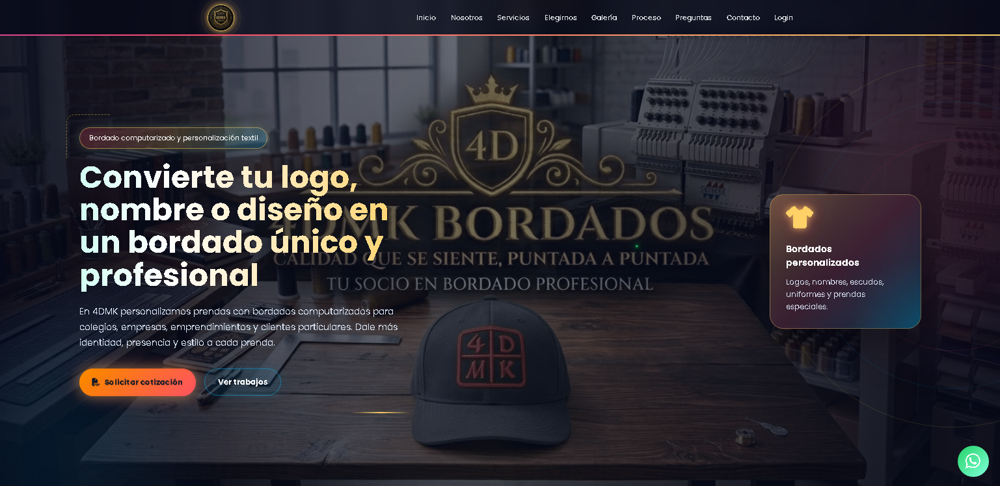
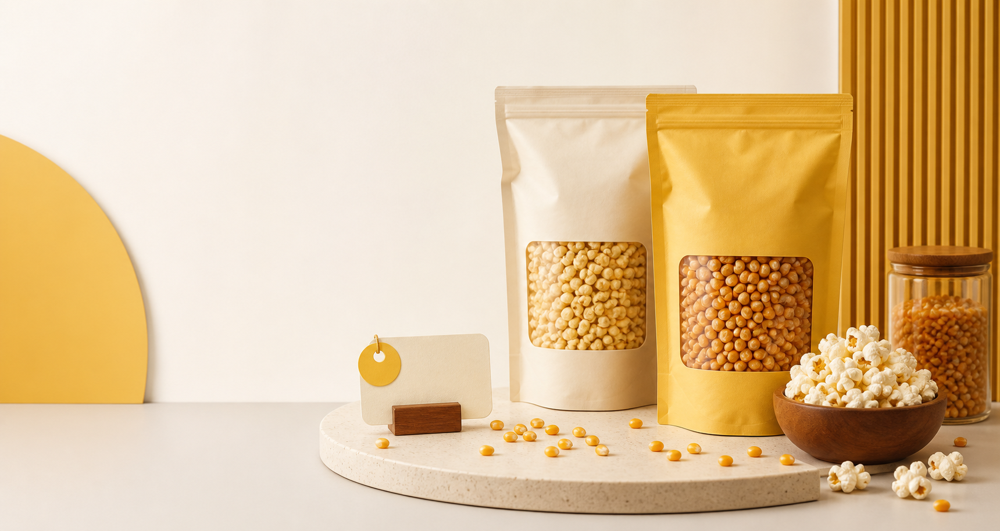
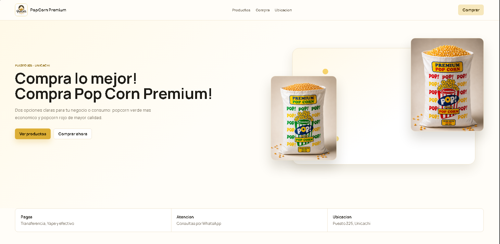

Estudiante de 4to ciclo
Enrique Valentino Pupe Guerrero
Ingeniería de Sistemas | Desarrollo web y sistemas web
Practicante de desarrollo web enfocado en soluciones digitales modernas, funcionales y fáciles de usar. Construyo páginas para negocios reales mientras fortalezco mis bases en programación, bases de datos y análisis de sistemas.
Perfil
Estudiante en formación, con proyectos reales y enfoque práctico.
Soy estudiante de Ingeniería de Sistemas en la Universidad Nacional Tecnológica de Lima Sur. Me interesa crear soluciones digitales útiles, ordenadas y visualmente cuidadas para negocios, servicios y proyectos que necesitan una presencia web clara.
Me considero creativo, adaptable y orientado a resolver problemas. Actualmente sigo fortaleciendo mis conocimientos en desarrollo web, programación, bases de datos y documentación de proyectos.
Proyectos
Trabajo seleccionado

Proyecto web
4DMK
Página web para un negocio de bordados computarizados y personalización textil. Presenta servicios, galería, proceso, preguntas frecuentes y contacto directo para solicitar cotizaciones.

HTML
CSS
JavaScript
Netlify

Web comercial
PopCorn Premium
Página comercial enfocada en presentar productos de popcorn, destacar opciones de compra y facilitar información de atención, ubicación y contacto para el negocio.

HTML
CSS
Producto
Netlify
Trayectoria
Formación y experiencia
Ingeniería de Sistemas - UNTELS
Estudiante de 4to ciclo con formación en fundamentos de programación, lógica computacional, bases de datos, análisis de sistemas y soluciones tecnológicas.
Creador de página web - 4DMK
Desarrollo de una presencia digital para servicios de bordado, con secciones para servicios, galería, proceso, preguntas y contacto.
Creador de página web - PopCorn Premium
Creación de una web comercial para presentar productos, compra, ubicación y atención directa del negocio.
Inglés - UNTELS Idiomas
Formación progresiva para mejorar comunicación académica, lectura de documentación técnica y aprendizaje de herramientas tecnológicas.
Capacidades
Habilidades y herramientas
Desarrollo web
HTML, CSS, maquetación responsive y bases de JavaScript para interactividad.
Programación y datos
Fundamentos de SQL, Java, Python y C++ como parte de mi formación universitaria.
Herramientas digitales
GitHub, VS Code, Netlify, organización de archivos y documentación de proyectos.
Perfil personal
Creatividad, adaptabilidad, aprendizaje continuo, responsabilidad y comunicación clara.
Contacto
Hablemos de proyectos web y oportunidades
Estoy abierto a seguir aprendiendo, colaborar en proyectos y crear soluciones web sencillas, ordenadas y funcionales.